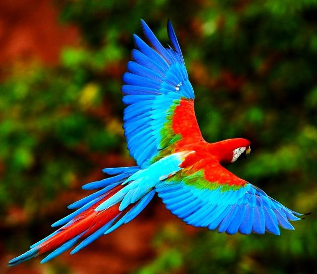

El Aguila Calva es protegida por los Estados Unidos ya que es uno de sus símbolos patrios por estar en la bandera. Para otras personas el Águila Calva es un símbolo que significa libertad. Pero aún así está en peligro de extinción.
El Cóndor Californiano
El Cóndor Californiano , que tiene como nombre científico Gymnogyps californianus, es el ave mas grande de toda Norteamérica. Este cóndor originalmente dependía de los cadáveres de grandes mamíferos para la alimentación. Con la expansión de los asentamientos en los mediados de 1800, esto cambió y ha visto reducida su fuente de alimentación.
El cóndor de California adulto es de color negro uniforme, con la excepción de grandes manchas triangulares o bandas de color blanco en la parte inferior de las alas. Tiene patas grises, plumas negras alrededor de la base del cuello, de color marrón y los ojos rojos. El Cóndor cuando es mas joven es sobre todo un moteado marrón oscuro con coloración negruzca en la cabeza. Cuenta con moteado gris en vez de blanco en la parte inferior de las plumas de vuelo.El Número de Cóndor Californiano ha disminuido dramáticamente desde el siglo 20 debido a la caza furtiva, el envenenamiento por plomo, y la destrucción del hábitat, por ello es un animal en peligro de extinción. Un plan de conservación fue puesto en marcha por el gobierno de Estados Unidos que llevó a la captura de los 22 cóndores silvestres restantes en 1987. Estas aves sobrevivientes fueron criadas en el San Diego Zoo Safari Park y el zoológico de Los Ángeles. Su población se levantó a través de la cría en cautividad y, a partir de 1991, los cóndores han sido reintroducidos en la naturaleza. El cóndor de California es una de las especies de aves del mundo más raras.
El guacamayo escarlata

El guacamayo escarlata es natural de Centroamérica, su distribución comprende desde las selvas de México hasta Brasil, Bolivia y el noreste de Argentina. Habita en las selvas tropicales de tierras bajas, hasta los 900 metros de altitud.El plumaje es principalmente rojo escarlata, con la rabadilla y el plumaje sobre la cola azul, y amarillo en la parte baja de las alas. Tiene piel blanca en torno a los ojos y negra la mandíbula inferior.Su impresionante colorido, la facilidad con que se domestica y cría en cautividad y el hecho de que pueda imitar voces, hacen que esta ave se haya tenido como mascota desde hace siglos.Anida en los huecos de los árboles, en las grietas de las rocas y en las barrancas arcillosas. La nidada consiste de dos a tres huevos que son incubados durante 24 ó 25 días. Los pollos nacen sin plumas y son, por un largo periodo de tiempo, completamente dependientes de sus progenitores. No abandonarán su compañía hasta los dos años de edad. Las parejas se establecen de por vida.Este gran guacamayose alimenta de semillas grandes y frutas. Puede superar el kilogramo de peso y medir cerca de un metro de longitud.